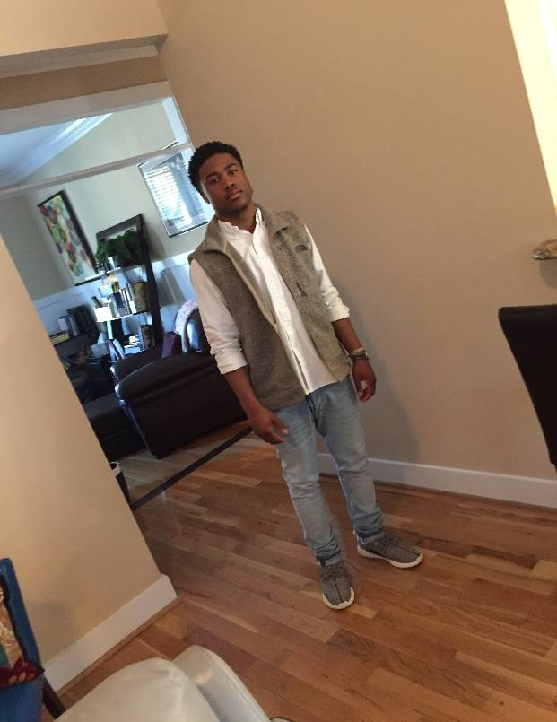

Hi, my name is Oliver Yellock, I was born and raised in Raleigh, North Carolina (NC), and I am currently living in Wake Forest, NC. As of now, I am a sophomore pursuing a computer science degree. Five goals I have for this year are to strive to do better in my classes this semester than I did last semester, stay focused throughout the semester, learn new skills that will help assist me in my future careers, learn to develop more efficient code, and find an internship to develop connections to increase my chances of finding a job once I graduate. Two interesting things about myself are I enjoy playing basketball and video games during my free time.
